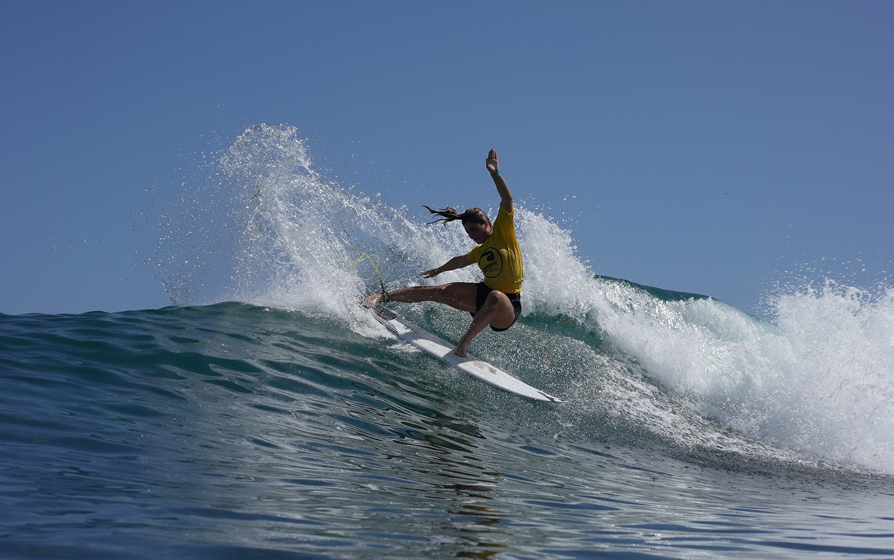
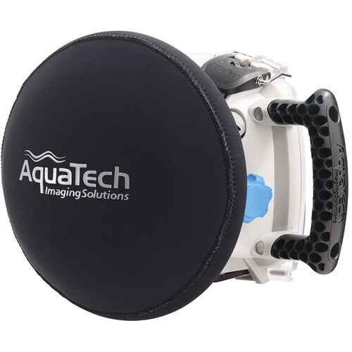
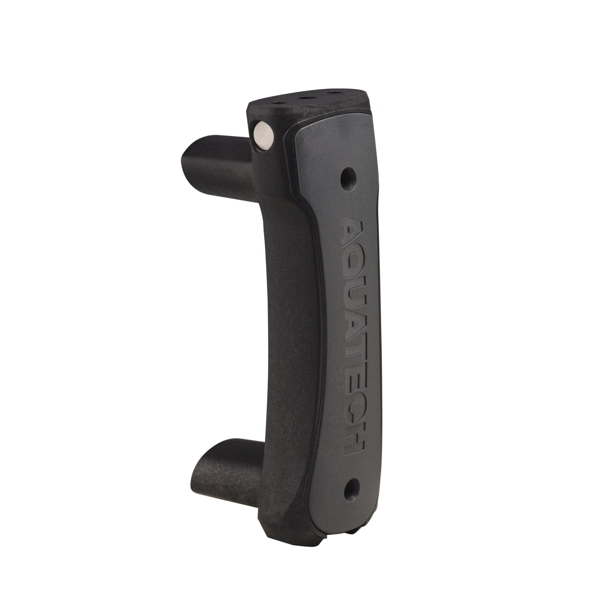

Rentals
Camera gear for shoots, events, and content days.
The rental side centers on Sony bodies, cine-style video gear, stabilization, and specialty lenses for different production needs.
Camera rentals and creative production
Ardi Rent & Service LLC is built for photography, video, podcasts, live streaming, and high-end audiovisual production. The business combines equipment rental, creative services, and lead generation into a scalable operation.
Rentals
The rental side centers on Sony bodies, cine-style video gear, stabilization, and specialty lenses for different production needs.
Services
The service side focuses on content creation, production coordination, and helping clients turn gear into finished media.
About us
Public profiles and surf coverage show Ardiel as a creative rooted in the Canary Islands, with a strong connection to the water and a sharp eye for photography, cinema, music, and travel. That background helps explain why Ardi Rent & Service feels like both a rental company and a visual studio.
The story behind the brand is simple: Ardiel understands motion, timing, and live visual work. In surf imagery and public profile photos, he appears both as a subject and as a storyteller, which matches the way this business combines gear rental with hands-on production support.


The brand is built around gear, story, and the ability to move between the sea, the studio, and the set.
Ardi Rent & ServiceServices
The documents position Ardi Rent & Service LLC as a company that combines equipment, creative production, and client acquisition in one ecosystem.
Sony mirrorless bodies, a professional 4K XDCAM camcorder, action camera options, and stabilization gear for shoots of different sizes.
Flexible support for portraits, branding, events, and content capture with the right lenses and camera combinations for each project.
High-quality video coverage, production support, and project coordination for interviews, branded content, and social campaigns.
A setup designed for studio sessions, livestreams, and multi-format audio-visual content, including streaming-ready gear.
Equipment
These are the camera bodies and camera systems that should be featured first on the website.
 Hybrid
Hybrid
Our newest full-frame body for fast hybrid photo and video production.
 Video-first
Video-first
Built for cinematic shooting, low-light work, and hybrid photo/video workflows.
 Hybrid
Hybrid
A flexible all-rounder for clients who need one body that can do both.
 Flagship
Flagship
A top-tier body for premium production and demanding commercial shoots.
 Action
Action
Compact action capture for behind-the-scenes, travel, and dynamic cuts.
 Action
Action
Built for sharp action footage, creator setups, and flexible mounting angles.
 Compact
Compact
A small, stabilized camera for mobile work, behind-the-scenes, and quick content.
 Broadcast
Broadcast
The streaming and event camcorder used for live production and long-form coverage.
Waterhousings & Accessories
Dedicated underwater support gear for camera bodies, action cameras, and rig control below the surface.
 Housing
Housing
Compatible with Sony Full Frame bodies including Sony 7C3, 7R4, and 7R3 for underwater production and marine hybrid capture.
 Housing
Housing
High-performance underwater housing for premium full-frame production in demanding water environments.
 Floatation
Floatation
Bright orange flotation device that helps keep HERO13 and HERO12 afloat and easy to spot during water activities.

PortsFlat port set including Aquatec models P35, P100, and P130 for different lens configurations and underwater shooting scenarios.
 Dome
Dome
Aquatec dome ports in large and medium sizes for wider field coverage and smooth underwater perspective control.

AccessoriesErgonomic Aquatec Pistol Grip accessory for improved one-hand control and handling while shooting underwater.
Production Accessories
Essential support accessories used on set for stable camera movement and professional production workflows.
 Tripod
Tripod
Heavy-duty tripod system with fluid head for stable video work, smooth pans, and controlled tilt movement during professional productions.
 Wireless video
Wireless video
Wireless video transmission kit for reliable on-set monitoring, director viewing, and flexible camera-to-monitor workflows.
 Audio
Audio
Broadcast-ready stereo headset with boom microphone for clear communication in live productions, directing, and event coverage.
 Audio
Audio
Compact two-person wireless microphone system for camera and smartphone recording, ideal for interviews, vlogs, and mobile production setups.
 Rig
Rig
Shoulder-mounted support rig for more stable handheld operation and smoother camera movement during long-form filming sessions.
 Lighting
Lighting
High-output on-camera flash for Sony systems, ideal for portraits, events, and controlled fill lighting in mixed shooting conditions.
 Flash trigger
Flash trigger
Touchscreen TTL wireless trigger for Sony-compatible Godox flashes, enabling fast remote control and multi-light setup management on set.
 Lighting
Lighting
Collapsible flash diffusion dome for softer, more flattering light spread in portraits, events, and indoor on-camera flash work.
 Monitor
Monitor
7-inch on-camera production monitor with 4K HDMI/SDI support for accurate exposure, focus tools, and reliable field monitoring.
 Converter
Converter
Compact HDMI-to-SDI converter for dependable signal conversion in multi-camera workflows, live production, and professional monitoring setups.
 Filters
Filters
Variable ND filter kit with matte box for fast exposure control, cleaner highlights, and professional lens shading in outdoor productions.
 Lighting support
Lighting support
Compact mini tripod and handle accessory for PavoTube II 6C, useful for handheld lighting control and fast table-top placement on set.
 Teleprompter
Teleprompter
Foldable portable teleprompter for smoother on-camera delivery, scripted interviews, and creator presentations in studio or field setups.
 Wireless video
Wireless video
Dual-brand wireless video transmitter for flexible camera monitoring, low-latency feed delivery, and efficient on-set collaboration.
 Camera rig
Camera rig
Pro camera cage kit for Sony A7S III with accessory mounting points for stronger rigging, improved handling, and faster on-set setup.
 Lens adapter
Lens adapter
PL-to-E mount adapter with internal flocking for cleaner contrast, reduced internal reflections, and professional cinema lens integration.
 Wireless video
Wireless video
Wireless transmitter and receiver system for low-latency video monitoring and efficient multi-device collaboration during production.
 Audio
Audio
Compact wireless mic system paired with wearable lavaliers for clean voice capture in interviews, mobile production, and on-camera presentations.
 Tripod
Tripod
Fluid drag video head and tripod setup for smoother pans, controlled tilts, and stable support in production environments.
 Lighting
Lighting
RGB pixel tube lights for creative color control, practical lighting, and dynamic scene accents for photo and video production.
 Stabilizer
Stabilizer
Compact motorized gimbal stabilizer for smooth cinematic movement, handheld tracking shots, and stabilized run-and-gun production.
Lenses
A focused look at the lenses in the inventory. This section stays on the glass only, so the gallery reads as optics, not cameras.
 Wide angle
Wide angle
Ultra-wide G Master glass for architecture, events, and cinematic establishing shots.
 Wide angle
Wide angle
A lighter ultra-wide option for travel, interiors, and clean spatial storytelling.
 Prime
Prime
Fast wide-angle prime that works well for content, vlog setups, and interiors.
 Prime
Prime
Natural perspective and premium rendering for portraits, documentary, and brand work.
 Prime
Prime
Bright, cinematic full-frame standard prime with deep subject separation and speed.
 Portrait
Portrait
Classic portrait focal length with a compact footprint and clean subject isolation.
 Portrait
Portrait
A premium portrait prime for crisp details, flattering compression, and creamy bokeh.
 Telephoto
Telephoto
Fast telephoto zoom for events, production work, and compressed cinematic framing.
Prime
Compact full-frame prime for travel kits, documentary shooting, and lightweight setups.
 Macro
Macro
Macro detail lens for product work, close-ups, and high-precision focus control.
Telephoto
Lighter telephoto zoom for events, portraits, and long-range coverage on the move.
Super telephoto
Long-reach zoom ideal for sports, surf, wildlife, and distant action capture.
 Accessory
Accessory
Adds extra reach to compatible Sony telephoto lenses while keeping autofocus performance.
 All-in-one zoom
All-in-one zoom
Versatile one-lens solution for travel, fast run-and-gun shoots, and mixed coverage.
Zoom
New G Master zoom with constant f/2 aperture for premium hybrid production work.
 Fisheye
Fisheye
Creative ultra-wide fisheye perspective for stylized shots and immersive action angles.
Production model
The pitch document makes it clear: the goal is not only to launch a beautiful website, but to build a commercial foundation that generates revenue, order, and scalability.
That means the site should help clients describe the project, ask for production support, and understand how much gear they may need before they request a quote. Ardi can then coordinate projects directly or through a network of photographers, videographers, and technicians.
Business vision
The strategy is to combine rentals, direct services, and client acquisition in one place. That is the real opportunity behind the brand.
Growth path
The pitch references Shopify as the base for reservations, deposits, and lead generation. This website can act as the public front door while the backend grows into a stronger sales system.
Contact
The next step is to finish the live pages with your real contact details, portfolio links, and the exact gear/services you want to prioritize on the homepage.